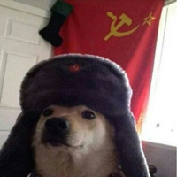
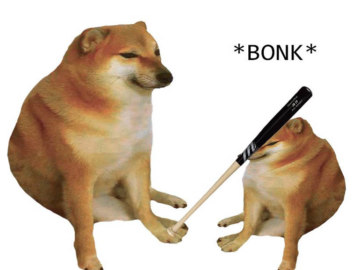
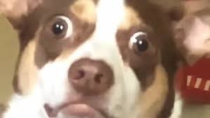

Собака в костюме Адидас
Собака в костюме Адидас (Чимс в Адидасе, Adidas Dog, Slav Cheems) – мем с собакой породы сиба-ину, которая одета в спортивный костюм Adidas. Это часть стереотипа про русских, распространенного на Западе.
|
Cобака в советской шапке

Собакен комрад
|
Bonk

Бонк (Bonk, Собака с битой) – мем, на котором изображена собака, бьющая другую собаку по голове битой.
|
Забавная собака с убойной реакцией

Когда молодой человек говорит: "Мистер Бабз, я люблю тебя", животное будто совсем не радуется проявлению нежных чувств, а выглядит злобным или расстроенным. А когда доносится строгий женский голос: "Я записала тебя на камеру!". На морде у животного возникает выражение панического ужаса.
|